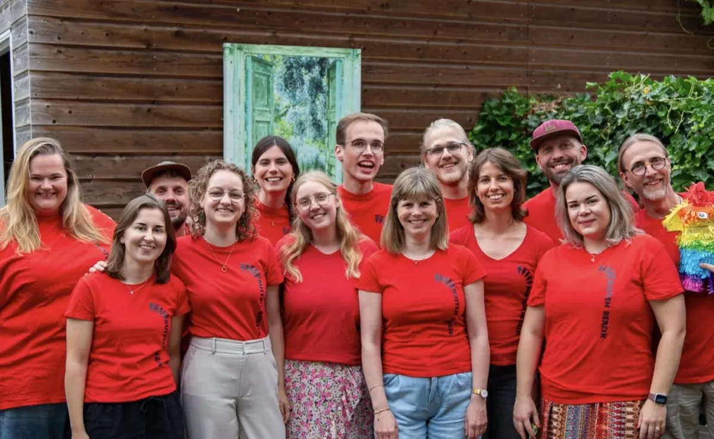

Evenement
Theatervoorstelling Buiten Bereik
- Wanneervrijdag 6 november 2026, 20.00 tot 22.30 uur
- WaarTheater het Badhuis Nijmegen
Daalseweg 262 6523 CD Nijmegen Route

Om het nieuwe seizoen af te trappen gaat Buiten Bereik weer een fantastische voorstelling spelen! Het merendeel van de spelers gaat shinen in het mooie Badhuis. Kom kijken hoe onze spelers op elkaar ingespeeld zijn. Wie weet zie je ook wel een nieuw gezicht!
Meer evenementen bij Theater het Badhuis Nijmegen
Er staan nu geen andere evenementen van Theater het Badhuis Nijmegen in de agenda.